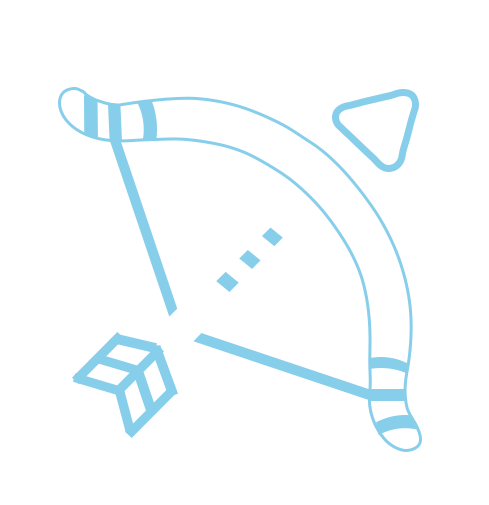

Vectorium
Lançamento Oblíquo
Lançamento Horizontal
Lançamento Vertical
Parâmetros da Simulação
Velocidade Inicial (m/s):
Altura Inicial (m):
Altura Final (m):
Simular
Lançamento Horizontal
Características da Simulação
Tempo de Voo:
0
s
Distância Horizontal:
0
m
Histórico de Simulações